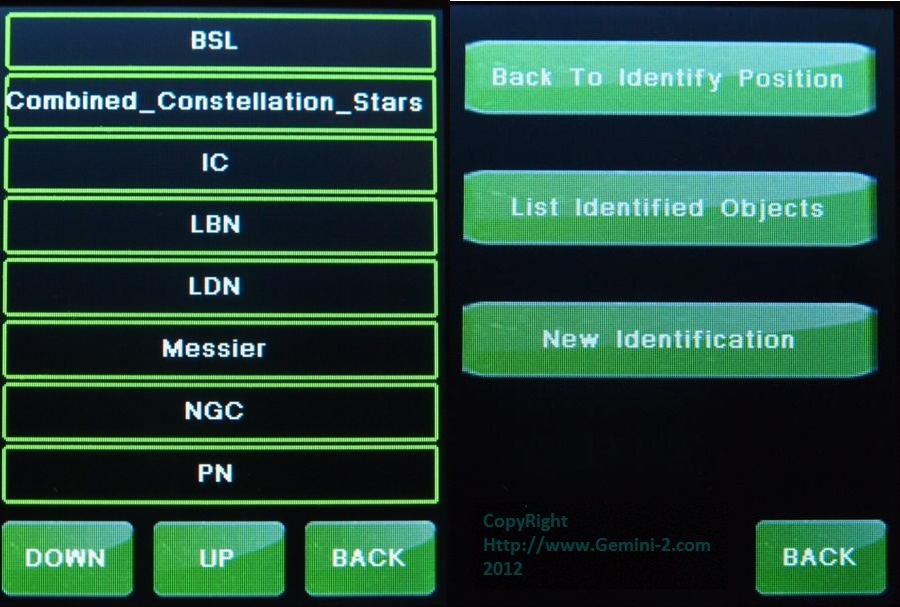

| Interactive Hand-Controller Menus - click on green button to Navigate |
|  |
| These two menus help identify up to ten celestial objects that lie within a
range of about 10 degrees from where the telescope is currently
pointing. The menu on the right will not normally come up, until you have identified a catalog from the left menu. The left menu lets you select the catalog from which the objects will be identified from, and the right menu will let you go between objects that have been identified. Those objects nearest the pointing position are listed first, and the selection is refined as you designate the object’s catalog, type, and maximum magnitude (These latter items appear in the menu tree as submenus). You can scroll through the list of identified objects with the Up and Down buttons. As each object is displayed, it becomes the "selected object," with coordinates and data available in the information buffer. |